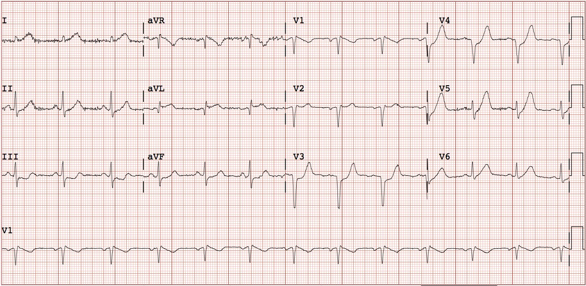
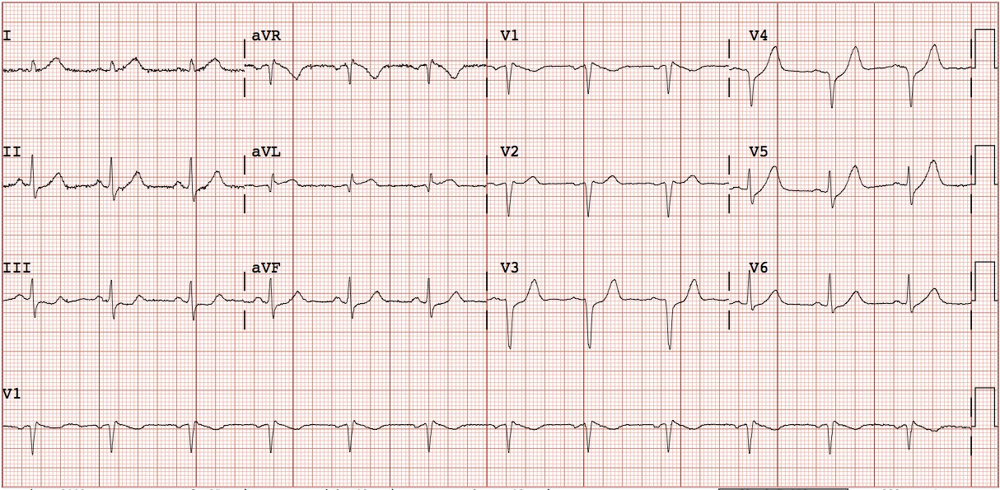
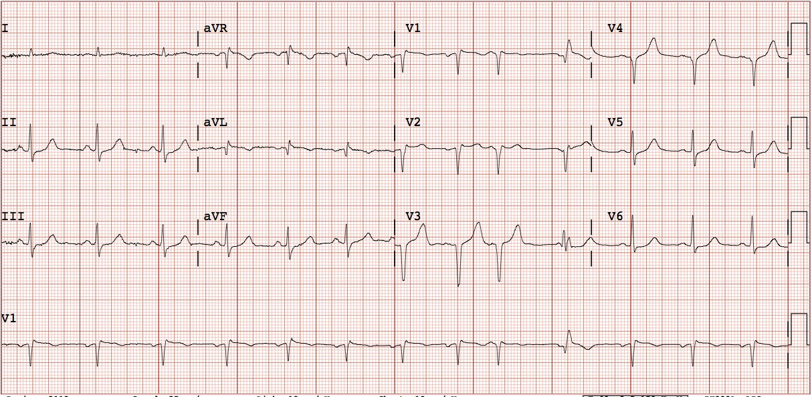
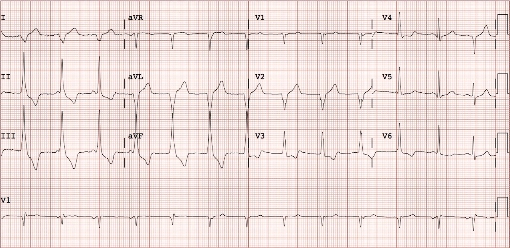
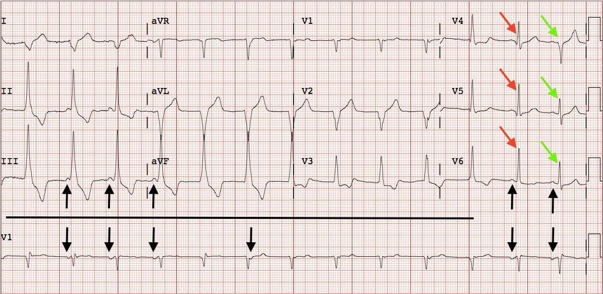
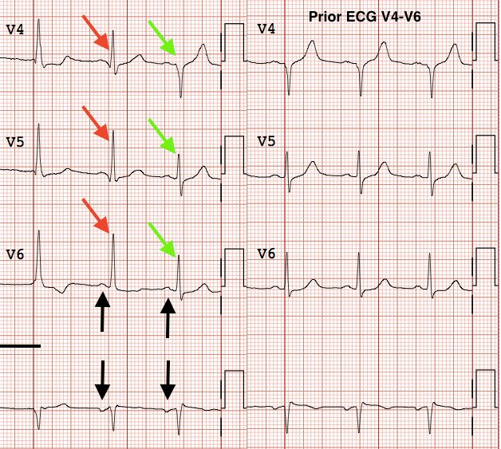
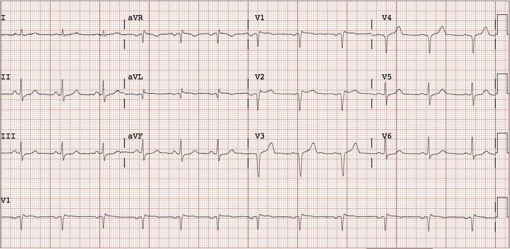

24/09/2017 — Đau ngực và ST chênh xuống ở các chuyển đạo trước tim tự hết, sau đó xuất hiện một nhịp QRS rộng
Bản dịch tiếng Việt của bài "Chest pain and precordial ST depression which resolve, followed by a wide complex rhythm" – Dr. Smith’s ECG Blog. Giữ nguyên toàn bộ 7 hình ảnh của bản gốc.
Đây là một ca khác do Pendell Meyers, bác sĩ nội trú năm thứ hai (G2) tại Stony Brook, viết. Như tôi đã đề cập trước đây, Pendell sẽ giúp biên tập và viết bài cho blog. Bài được Smith biên tập.
Ca này có thể khá hiển nhiên đối với những độc giả lâu năm của blog, nhưng có một tình tiết bất ngờ thú vị.
Một bệnh nhân nam 50 mấy tuổi, không có tiền sử bệnh lý, đến viện tại thời điểm = 0 với than phiền đau ngực trong vài giờ qua. Bệnh nhân ổn định huyết động, khám thực thể bình thường. Bệnh nhân đã được đội cấp cứu ngoài viện (EMS) cho dùng aspirin 325 mg.
Đây là
điện tâm đồ lúc đến viện của bệnh nhân (tại thời điểm = 4 phút):


Nhịp xoang. Có ST chênh lên (STE) khoảng 1mm ở aVL kèm ST chênh xuống (STD) soi gương ở II, III và aVF. Có STD ở V3-V6, kèm sóng T tối cấp (hình thái de Winter) ở V3-V6 và cũng có sóng T tối cấp ở các chuyển đạo V5, V6 và I. Hình ảnh này chẩn đoán một cách không thể nhầm lẫn tổn thương xuyên thành cấp ở thành trước và thành bên, với nguyên nhân nhiều khả năng nhất là tắc cấp (hoặc gần tắc) một động mạch vành cấp máu cho các thành này, chẳng hạn LAD, một nhánh chéo lớn, nhánh trung gian (ramus intermedius), hoặc đôi khi là LCX hay các nhánh của nó.
STE ở các chuyển đạo bên kèm STD ở các chuyển đạo trước tim có thể khiến bạn chẩn đoán STEMI sau-bên, vì tin rằng ST chênh xuống ở V3 là thay đổi soi gương của ST chênh lên ở thành đối diện. Người ta cũng có thể tin rằng STEMI thành sau được chẩn đoán khi có STD ở các chuyển đạo trước tim phải kèm sóng T dương, như chúng ta thấy trong ca này.
Điều này là sai vì hai lý do:
Thứ nhất, STEMI thành sau không phải lúc nào cũng có sóng T dương (xem phần giải thích ở cuối bài này: Right precordial ST depression in a patient with chest pain). STEMI thành sau cấp với tình trạng tắc kéo dài có thể biểu hiện sóng T dương, nhưng cũng có thể có sóng T đảo ngược. Chỉ STEMI thành sau đã tái tưới máu hoặc bán cấp mới luôn có sóng T dương.
Thứ hai, và quan trọng hơn, sóng T dương ở đây rất lớn. Xin nhắc lại, STEMI thành sau đã tái tưới máu (hết đau) có thể có sóng T lớn, trông như tối cấp (“sóng T tái tưới máu thành sau”: xem 2 Examples of Posterior Reperfusion T-waves), nhưng STEMI thành sau cấp đang còn đau thì không.
Hình thái này rõ ràng là sóng T de Winter (bài báo: “Persistent precordial “hyperacute” T-waves signify proximal left anterior descending artery occlusion“; đây là toàn văn). Hình ảnh de Winter được đặc trưng bởi ST chênh xuống và sóng T tối cấp (lớn) ở vùng phân bố của thiếu máu cục bộ. Điều này trái ngược với sóng T dương do nhồi máu cơ tim thành sau, và cũng trái ngược với ST chênh xuống ở thành dưới trong ca này, vốn là soi gương với STE ở aVL. Với sóng T de Winter, nếu thiếu máu cục bộ nặng lên trước khi được tái tưới máu, ST chênh xuống có thể tiến triển thành ST chênh lên, có hoặc không kèm sóng T tối cấp.
Các bác sĩ đọc điện tâm đồ ghi nhận rằng họ thấy ST chênh xuống ở III và
aVF, nhưng không nhận thấy ST chênh lên rõ ràng nào trên điện tâm đồ.
Một điện tâm đồ ghi lại được chỉ định (tại thời điểm = 40 phút):


Kết quả troponin I ban đầu
trả về 0,10 ng/mL (tăng nhẹ) tại thời điểm = 49 phút.
Bệnh nhân cho biết đau ngực đã giảm. Một điện tâm đồ khác được
chỉ định (tại thời điểm = 2 giờ 7 phút):


Ngay sau khi ghi
điện tâm đồ đó, người ta ghi nhận bệnh nhân có thay đổi trên monitor tim dù tình trạng lâm sàng không thay đổi, và một điện tâm đồ khác được ghi (tại thời điểm = 2 giờ 9 phút):


Tần số 75 nhịp/phút theo định nghĩa thì không phải là VT. Hình thái không khớp với LBBB hay RBBB, và không có gai tạo nhịp. Không có đặc điểm cụ thể nào của tăng kali máu hay chẹn kênh Na, nhưng việc thiếu các đặc điểm này không nên là lý do để thôi nghĩ tới tăng kali máu nói riêng.
Như vậy chúng ta còn lại chậm dẫn truyền trong thất không đặc hiệu (NSICD), bệnh cơ tim, tăng kali máu và nhịp tự thất gia tốc (AIVR) (một nhịp lành tính và thoáng qua đi kèm với tái tưới máu thành công). Vì mục đích giảng dạy, hãy tạm giả sử rằng bối cảnh lâm sàng không ủng hộ rõ ràng AIVR (vì đôi khi sẽ không như vậy!), và xem kỹ hơn điện tâm đồ.


Các mũi tên đen chỉ ra một dạng hoạt động nhĩ nào đó, nhiều khả năng hiện diện suốt bản ghi nhưng có thể bị ẩn trong các phức bộ QRS ở những chỗ không được đánh dấu bằng mũi tên. Các sóng nhĩ không có mối liên hệ cố định với các phức bộ QRS rộng, và do đó là phân ly, cho thấy chúng đang cạnh tranh với phức bộ rộng chứ không phải gây ra nó (trừ một ngoại lệ ở cuối điện tâm đồ mà chúng ta sẽ bàn luận).
Khi có một nhịp QRS rộng, bạn phải kiểm tra tất cả các chuyển đạo và toàn bộ dải nhịp để chắc chắn rằng không có phức bộ QRS nào có hình thái khác. Nếu bạn tìm thấy một QRS có hình thái khác (đặc biệt khi nó hẹp hơn nhịp chủ đạo), bạn nên phân tích kỹ để tìm manh mối.
Đường kẻ dài màu đen cho thấy khoảng thời gian của nhịp QRS rộng chủ đạo. Nếu không nhìn kỹ cả 12 chuyển đạo, bạn có thể đã không nhận ra rằng nhịp này bị ngắt quãng ở ngay cuối, tại các chuyển đạo V4-V6 và dải nhịp tương ứng bên dưới. Như đôi khi vẫn xảy ra, thay đổi về hình thái và độ rộng QRS không dễ thấy trên dải nhịp, và chỉ lộ ra ở các chuyển đạo V4-V6. Có hai phức bộ QRS có hình thái khác với nhịp QRS rộng chủ đạo trước đó, được đánh dấu bằng mũi tên đỏ rồi đến mũi tên xanh lá. Các phức bộ QRS này hẹp hơn nhịp QRS rộng trước đó; thực tế, QRS được đánh dấu bằng mũi tên xanh lá rất hẹp.
Việc phát hiện một nhát thực sự hẹp có ý nghĩa quan trọng đối với chẩn đoán phân biệt. Tăng kali máu ở mức tế bào không thể thay đổi theo từng giây. Nếu tăng kali máu nặng tới mức gây giãn rộng QRS cấp tính, bạn không thể nào dẫn truyền được một nhát QRS thực sự hẹp duy nhất ở giữa nhịp bị giãn rộng do tăng kali máu. Điều tương tự cũng đúng với chẹn kênh Na, toan máu nặng và bệnh cơ tim. Ngược lại, blốc nhánh đôi khi có thể thay đổi trong khung thời gian này, vì đó là một biến cố “tất cả hoặc không” phụ thuộc vào việc tế bào đơn lẻ ấy trong nhánh bó có đang trơ hay không vào đúng khoảnh khắc điện thế hoạt động đến và xin phép đi tiếp xuống nhánh bó.
Ngoài ra, khi bạn tìm thấy một nhát hẹp như thế này giữa một nhịp QRS rộng, bạn nên so sánh với điện tâm đồ cũ nếu có. Nếu so sánh các phức bộ QRS xanh lá ở V4-V6 với cùng các chuyển đạo đó trên điện tâm đồ trước, lúc chưa có rối loạn nhịp QRS rộng, bạn sẽ thấy chúng giống hệt nhau về độ rộng và hình thái:


Có vẻ như hoạt động nhĩ, vốn đang cạnh tranh (và “thua”) trước nhịp QRS rộng, bắt đầu giành lại quyền kiểm soát ở cuối điện tâm đồ (và/hoặc AIVR đang lắng xuống). Khi bắt đầu làm vậy, nó tạo ra một nhát hỗn hợp (QRS được đánh dấu bằng mũi tên đỏ), hình thành khi một điện thế hoạt động trên thất hòa nhập trong tâm thất với một điện thế hoạt động thất. Ngay ở nhát kế tiếp, hoạt động nhĩ đến đủ sớm để chiếm quyền nhát AIVR và nhờ đó tạo ra một phức bộ QRS hoàn toàn trên thất [hẹp và có hình thái giống hệt trước đó (mũi tên xanh lá)].
Như đã ám chỉ ở trên, đây là nhịp tự thất gia tốc (AIVR), một dấu hiệu kinh điển nhưng tương đối ít gặp của tái tưới máu. Nhịp này thường có hình thái rập khuôn với các phức bộ dương đơn dạng rất lớn/cao ở các chuyển đạo thành dưới, kèm các thay đổi đoạn ST và sóng T soi gương tất yếu đi cùng với bất kỳ phức bộ QRS bất thường nào.
Quay lại ca bệnh:
Troponin lần thứ hai
trả về tăng ở mức 4,98 ng/mL tại thời điểm = 2 giờ 28 phút. Không có thêm kết quả đo troponin nào khác.
Lúc này bệnh nhân được ghi nhận
đã hết đau. Bác sĩ tim mạch được mời vì troponin tăng và đã đến khám cho
bệnh nhân.
Một điện tâm đồ khác được
ghi tại thời điểm = 2 giờ 37 phút:


Tái tưới máu tiếp diễn với độ lệch ST giảm dần và sóng T
trở về bình thường, nhưng vẫn còn sóng T đảo ngược (tái tưới máu) ở aVL.
Sau đó bệnh nhân được đưa
vào phòng thông tim (cath lab) tại thời điểm = 3 giờ 24 phút. Họ phát hiện “tắc nghẽn cấp 75%
ở D1 (tức là nhánh chéo thứ nhất tách ra từ LAD, nhánh này thường có thể khá lớn) kèm huyết khối, không có bệnh lý đáng kể nào khác.”
Phát hiện này phù hợp với nghi ngờ rằng bệnh nhân đã bị tắc hoàn toàn hoặc gần hoàn toàn vào thời điểm đau và vào thời điểm ghi điện tâm đồ đầu tiên.
Bất chấp mọi dấu hiệu trên điện tâm đồ, ghi chú cuối cùng của khoa cấp cứu
viết: “…Đau ngực cấp của ông _____ là hậu quả của NSTEMI. Bệnh nhân
có bất thường sóng T thành trước và ST chênh xuống
mà không có ST chênh lên trên điện tâm đồ. Bệnh nhân có tăng
troponin và CK-MB. Sự tăng troponin mà không có ST chênh lên này
chẩn đoán NSTEMI.”
Điềucần nhớ:
- Tắc mạch vành cấp có thể nhận ra được
thường bị bỏ sót do đọc điện tâm đồ kém, và trong ca này
đã gây chậm trễ ít nhất 3 giờ cho điều trị tái tưới máu cần thiết. - Khi đang có triệu chứng (ví dụ: đau ngực), ST chênh xuống theo sau là sóng T lớn ở các chuyển đạo trước tim là dấu hiệu tắc LAD hoặc một trong các nhánh lớn của nó, và được gọi là “sóng T de Winter.”
- May mắn là đôi khi, khi những điện tâm đồ này bị bỏ sót, huyết khối “tự tiêu” và động mạch được tái tưới máu mà không cần điều trị (hoặc nhờ aspirin). May thay, bệnh nhân này đã tái tưới máu trong thời gian bị chậm trễ.
- Tắc mạch vành cấp thường không biểu hiện đủ tiêu chuẩn milimét ST chênh lên để chẩn đoán STEMI.
- ST chênh xuống trong một vùng phân bố mạch vành nên kích hoạt một “điểm dừng bắt buộc” trong đầu bạn để tìm dấu hiệu tắc mạch vành cấp (ST chênh lên, dù rất ít) ở vùng phân bố đối diện (soi gương).
- AIVR là một manh mối hiếm gặp cũng hướng
tới chẩn đoán tắc mạch vành cấp đã được tái tưới máu. - Hiểu chẩn đoán phân biệt của phức bộ QRS rộng và nhận diện các dạng QRS thường gặp là chìa khóa để đọc điện tâm đồ.
- Những chỗ ngắt trong nhịp và các nhát QRS hẹp xen vào chứa đựng những manh mối sống còn để đánh giá một nhịp QRS rộng.
Đây là 10 ca khác có sóng T de Winter.